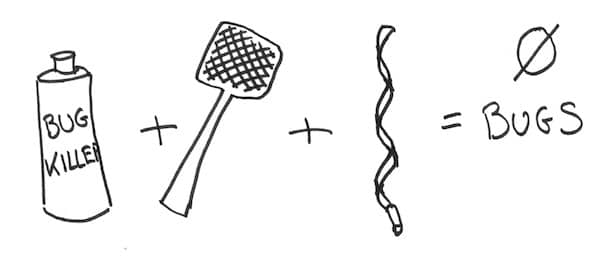

This is the third post of a series about the #ZeroBugs policy. In the first 2 posts, I detailed how we applied it in our team, and what were the consequences.
I hope that by now, I have convinced you that applying a #ZeroBugs policy is good for you and your team. I’ll surprise you by arguing that it’s a lot easier than people first think. This post will be about how to inject it in your team.

Build quality in
Obviously, you need a low bug rate for this work. If your team creates too many bugs, fixing incoming bugs only will consume all your time. You won’t be able to deliver new features and it will make everyone miserable.
If you are in this situation, I’d advice you to start investing in coding best practices such as :
With grit and time, your bug rate will get down.
New bugs
Before dealing with the old bugs, you should first put in place the target policy for new bugs. Don’t let the situation get worse !
The way to deal with new bugs is to setup a regular (at least weekly) routine to decide what to do about them :
- If it’s causing real pain to someone and needs a fix as soon as possible, then it’s very likely to be a bug
- If it’s something important you can still live without for a few sprints, change it to a story in the backlog.
- If it’s not that important now, delete or archive it as “won’t fix”
From then on, the new convention is fix all bugs before working on features. This ensures that the bugs backlog will not grow anymore. If you need more details about how to categorize issues, take a look at what Sam Hatoum says about that.
Different people will provide different perspectives on issues. Business people will know their business value. Developers will know fix’s impact on technical debt. Finally, service desk people will know how much time they would save with the fix. Depending on your situation, involve the right people in the classification.
Another approach is to do as we did, and come up with clear rules that define what a bug is. This has the advantage of allowing developers to categorize issues on their own. The drawback is that it can be very tricky to come up with these rules.
💡 Agree on rules for categorizing bugs with your users to streamline your flow
Old bugs
Ok, that was the easy part. How can we deal with the zillions bugs we all have waiting in the backlog ? Depending on the size of your bug backlog, you should adopt different strategies.
If you have a rather small bug debt, as we did, you can get away by prioritizing X bugs every sprint.
Let’s suppose you have a larger bug debt. You could do as ConceptShare did and crank out a feature team dedicated to eliminate bugs. That should work, but it will take some time. It took the ConceptShare teams 18 months to get rid of a 350 bugs backlog !
It’s a good idea to take a look at all existing bugs to re-classify some as stories and delete others. Just as you should now be doing with new bugs. This should drastically reduce the number of bugs, but it will take some time from very busy people … Again, rules to define what a bug is would make this easier.
Finally, there’s a last, very effective solution : archive all the bugs ! Some bugs must be months if not years old. Deleting them should not do much harm. Users will report important bugs again anyway. One caveat though : this won’t work if your bug rate is too high ! If quality is too low, you’ll drawn under old bug.
Going further
It’s great to fix the bugs very fast. It’s even better if to fix them before the users see them ! Exploratory testing is the way to do that. It will also provide you a measure of how many bugs escape your development process. I encourage you to try this very interesting practice. I wrote a guide about how to start exploratory testing.
💡 Exploratory Testing gives you a quantifiable measure of your workflow
Next week
This was part 3 of a series of posts about the #ZeroBugs policy. In next week’s post, I’ll provide arguments and advices to convince the people around you to give it a try.